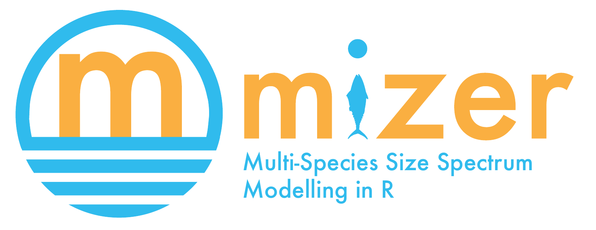

Mizer is an R package to run dynamic multi-species size-spectrum models of fish communities. The package has been developed to model marine ecosystems that are subject to fishing. However, it may also be appropriate for other aquatic ecosystems.
The package contains functions to allow users to set up an ecosystem model, and then project it through time under different fishing strategies. Methods are included to explore the results, including plots and calculation of community indicators such as the slope of the size spectrum. Size-based models can be complicated so mizer contains many default options that can be easily changed by the user.
Mizer has been supporting research in marine ecology and fisheries science since 2014 (see publications). Mizer is still under active development. Version 2.0 has increased the user-friendliness and the flexibility of the framework. Contributions from the user community are very welcome. There is a sister package called mizerExperimental where user contributions can be checked out and receive feedback from the community. Example mizer models can be contributed to mizerExamples. Follow us on twitter and read our blog to stay up-to-date with new developments. Does your project or publication use mizer? If so, we would love to know.
Recent work on mizer was funded by the European Commission Horizon 2020 Research and Innovation Programme under Grant Agreement No 634495 for the project MINOUW (http://minouw-project.eu/) and the Australian Research Council Discovery Project Rewiring Marine Food Webs.
Installation
The package is on CRAN and therefore available from R’s built-in package manager.
# Install latest released version from CRAN
install.packages("mizer")
# Alternatively, install the development version from GitHub
remotes::install_github("sizespectrum/mizer")Example
The following code loads the mizer package, loads some information about species in the North Sea that comes as an example with the package, sets up the parameters for the mizer model, and runs a simulation for 10 years.
library(mizer)
params <- newMultispeciesParams(NS_species_params, NS_interaction)
sim <- project(params, t_max = 10, effort = 0)The results of the simulation can then be analysed, for example via plots:
plot(sim)
See the accompanying Get started page for more details on how the package works, including detailed examples.
Dynamic multi-species size-spectrum models
A mizer model captures the interactions between multiple species. The growth rates of fish are determined by the availability of prey and the death rates are influenced by the abundance of predators, as well as fishing. The model starts with the individual-level physiological rates for each species, as well as the predation preferences, and deduces the population-level dynamics from these. Thus quantities like fish diets and fisheries yields emerge dynamically and can be projected into the future.
Because a mizer model tracks the size of individuals as they grow up over several orders of magnitude from their egg size to their maximum size, it correctly tracks the ontogenetic diet shifts. An individual typically moves through several trophic levels during its life time. This is often not correctly captured in other multi-species models.
A mizer model can be set up with only a small amount of information because it uses allometric scaling relations and size-based feeding rules to choose sensible defaults for unknown parameters.
Setting up a new multi-species mizer model is a two-step process, similar to what may be familiar from Ecopath with Ecosim: First one calibrates the model to describe a steady state that is in agreement with current observations (as in Ecopath), then one chooses the additional parameters that determine the dynamics away from the steady state (as in Ecosim). This model can then be used to investigate future effects of changes in fishing policy or of environmental stressors.
Modelling environmental change
A mizer model is a good tool for studying the effect of environmental changes, like climate change, because it is a mechanistic model that can deduce the complex population-level changes that one is interested in from the simpler changes in the physiological rates and feeding interactions of individual fish species.
Smooth traffic on the biomass highway
It is interesting to think of the marine ecosystem as a transport system that moves biomass from the size of primary producers (mostly unicellular plankton) up to the sizes of fish that humans like to consume. Each fish that grows up from egg size to maturity by eating smaller individuals is like a car on this biomass highway. The yield of our fisheries depend on this traffic flowing smoothly and without traffic jams.
An analogy with road traffic may be helpful:
In road traffic, if traffic density gets too high in a section of the highway, drivers slow down, which leads to a pile-up producing even higher traffic density, leading to further slow-down in a potentially vicious cycle known as a traffic jam. Traffic management that ignores how the traffic density affects traffic speed fails. Luckily our mathematical understanding of transport equations has made practical contributions to managing traffic in ways that produce smoother traffic flow and hence higher throughput.
Mizer implements the transport equations for marine ecosystems. The potential for traffic jams is the same: if for example there is a high density of predators of a particular size, which all have preference for prey of a particular smaller size, then due to competition for that prey the growth of those predators slows down, leading to a pile-up which leads to further depletion of prey, leading to further slow-down, in a potentially vicious cycle.
Luckily the natural ecosystem has evolved to facilitate very smooth traffic on the biomass highway with resultant high productivity. This state is characterised by an approximate power-law shape of the biomass size spectrum. The purpose of mizer is to allow us to understand how various stressors, like fishing or climate change, affect the size spectrum and hence flow of biomass and the productivity and resilience of the marine ecosystem. Mizer allows us to investigate how size-based fisheries management strategies can be used to keep the ecosystem close to its natural productive state.
A model one can understand
One big advantage of a mizer model is that it is based on a strong mathematical foundation. This allows a degree of a priori understanding of the behaviour of the model that is absent in many other multi-species models. This theoretical foundation is well presented in the book “Fish Ecology, Evolution, and Exploitation” by Ken Andersen.